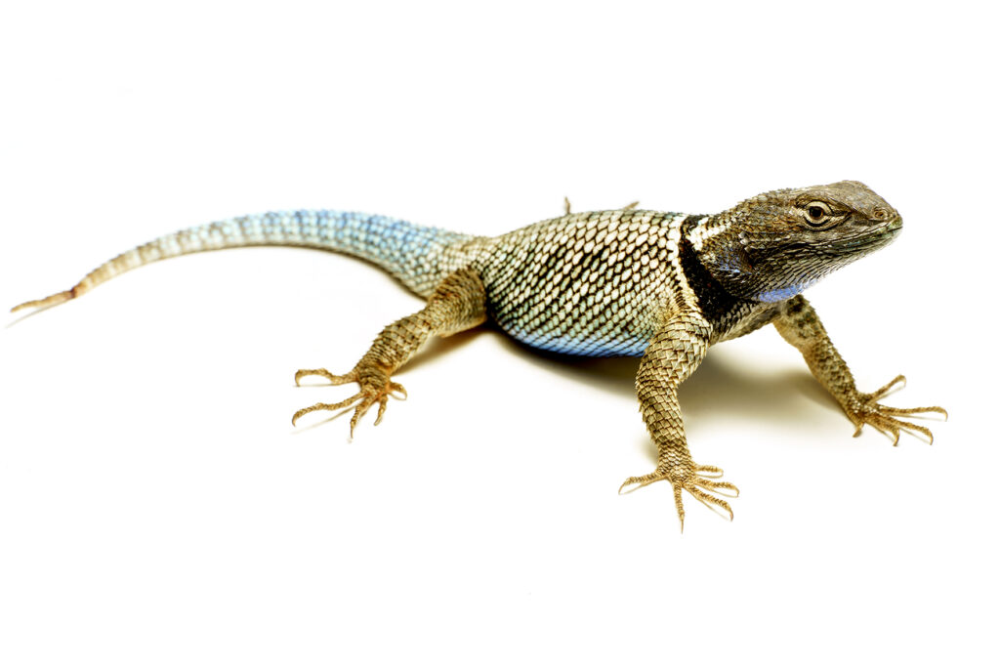

Serpiente de Cascabel
Es una especie que habita en zonas secas y montañosas.

Lagarto
Son animales vertebrados de sangre fría con piel cubierta de escamas.
Es una especie que habita en zonas secas y montañosas.

Son animales vertebrados de sangre fría con piel cubierta de escamas.